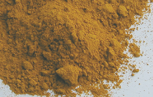

Imitations
Comme Marie Curie, martyr de la science, fut tuée par le radium, quelques
martyrs de la peinture furent les victimes des produits qu'ils manipulaient. Le
premier intérêt des imitations est d'éviter des accidents de ce type.
Certains pigments et matières colorantes sont des poisons épouvantables : la
céruse,
le vermillon authentique, le jaune de Naples
authentique, le cinabre, le
minium et
la mine orange ou le jaune de chrome, entre autres. Même
sans ingestion, certains de ces produits peuvent être fatals par simple contact avec la
peau (effet "patch"). Ils n'ont pas complètement disparu. Certains
ont changé de nom, d'autres sont proposés plus discrètement car ils sont
interdits :
ce sont de vraies
armes.
Leur vente est en théorie soumise à une consignation (livre d'apothicaire).
Lire
l'article sur la toxicité.
Quelques uns, employés par
des professionnels censément avertis sont seulement autorisés à la distribution de
gros.

Dans l'ensemble, heureusement, les pigments les plus dangereux ont été
remplacés par des imitations. Celles-ci reproduisent souvent fort bien
les teintes mais pas les autres caractéristiques des
originaux.
Une tout autre raison a motivé l'être humain à synthétiser des substituts
: le coût prohibitif de certains pigments.
Le bleu égyptien en serait le
premier exemple (information non confirmée). Mais une synthèse n'est pas
toujours nécessaire. L'imitation a bien souvent été une simple contrefaçon :
le curcuma (photo ci-contre) a bien souvent été vendu en lieu
et place du très précieux safran, par exemple.
La pourpre fut l'objet du même type de pratiques.
De nos jours, les teintes portant l'intitulé "ton
de" ceci ou cela, en anglais "hue",
sont des imitations. Signalons que certains fabricants ne spécifient pas
si leurs couleurs sont authentiques ou imitées. Il vous reste alors à le
déduire en fonction des nomenclatures pigmentaires (voir article)
- si elles figurent sur le produit. L'exigence d'informations claires dans ce
domaine est cependant tout à fait légitime ainsi que le boycott pur et simple
des produits dont la composition n'est pas annoncée.
Parcourons le paysage des imitations. Dans l'ensemble, les plus anciennes
sont les moins fidèles.
* Le jaune de Naples et son imitation peu réussie font l'objet de descriptions
séparées (voir article).
* Les cadmiums sont imités à cause de leur
toxicité - relative - mais surtout à cause de leur coût de fabrication et de
leur incompatibilité avec les substances au plomb réagissant fort mal avec
le soufre (voir compatibilité
et incompatibilité entre pigments).
Les pigments de substitution au cadmium sont assez fidèles sous le rapport de
la couleur et la permanence, mais n'ont quand même pas l'opacité extraordinaire des substances authentiques.
Ils sont
généralement azoïques. Selon certaines sources,
les cadmiums véritables seraient préférables aux imitations dans un emploi
pour la peinture à fresque.
* Le vert émeraude,
contenant chrome, brome et potassium, était vraiment toxique. Sa composition
actuelle n'est pas exactement une imitation, mais, pourrait-on dire, une autre
formulation.
* Le vert Véronèse
était encore plus toxique. C'était un terrible poison.
* Les imitations azoïque du rouge
vermillon ont
généralement conservé la luminosité de ce pigment exceptionnel, d'une très
grande utilité, tout en leur conférant une permanence bien supérieure.
L'imitation du vermillon est parfois appelée vermillonnette.
* Le rouge cinabre -> voir Vermillons.
* Le minium a surtout servi et sert encore d'apprêt pour
la peinture sur métaux. Sa distribution est autorisée aux grossistes. Son utilisation en peinture semble remonter à des
temps révolus (antiquité romaine) car nous ne lui connaissons même pas
d'imitation (personne ne cherche plus à l'imiter).
La mine orange, chimiquement très proche du minium (protoxyde,
dioxyde et carbonate de plomb), en connaît quelques unes, dont des gouaches et
des aquarelles, pour lesquelles elle prend le nom de rouge de Saturne. Nous ne
pouvons cependant nous prononcer quant à leur vraisemblance.
* Le
jaune de chrome (chromate de plomb), nocif ou toxique selon les
cas, très fugace et incompatible
avec les couleurs au soufre, a pratiquement disparu des palettes, remplacé par un
jaune azoïque de bien meilleure tenue.
* Le vert de vessie, qui
contenait du plomb, est en général une imitation de nos jours.
* Il existe d'autres pigments au plomb fort heureusement remplacées par des
imitations.
* Le bleu outremer est en lui-même une imitation (du lapis lazuli), réalisée pour une tout autre raison que la toxicité. Lire l'article qui lui
est consacré.
Certaines couleurs comme tous les pigments au cobalt, notamment, sont
proposées sous les deux formes pour le même genre de raisons : l'original est
très coûteux, l'imitation, souvent très qualitative, est abordable pour
beaucoup d'artistes.
Retour
début de page